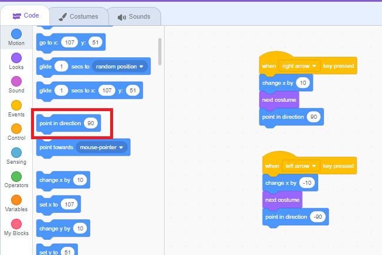
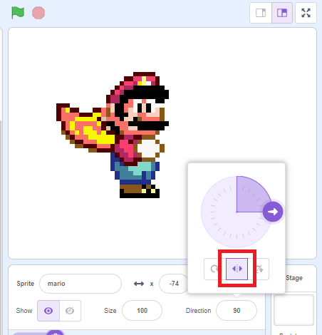
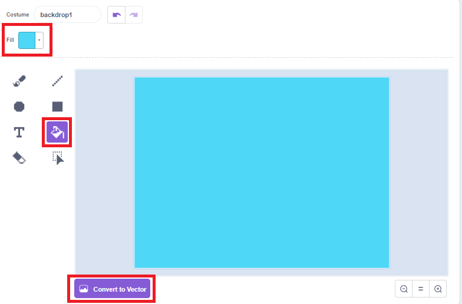

Primeiros passos criando o jogo:
Como padrão o Scratch vem com a linguagem em inglês. Utilizaremos a plataforma com a linguagem padrão para poder ir nos habituando e conhecendo os comandos em inglês. Através de capturas de tela irei mostrar o passo a passo para que você possa criar o seu jogo. Vamos começar?
Apague o gatinho clicando sobre a lixeira no canto superior direito do ator.

Agora vamos renomear o nosso arquivo para "Jogo_do_Mario" A barra para renomear o arquivo se encontra na parte superior ao lado de "Edit".

Importe o gif do personagem para dentro do Scratch. Passe o cursor do mouse sobre o rostinho do gatinho e clique na seta "upload sprite" que significa "carregar ator".
Procure a pasta onde você salvou o gif do mario, no meu caso está em DATA(D:) na pasta Bliblioteca. Clique sobre o personagem e logo depois em 'Abrir' no canto inferior direito da página. O mário já irá aparecer no seu palco.
Inserindo os blocos de movimento:
Na área de blocos Events(eventos), pegue o
bloquinho
when space key pressed(quando tecla espaço pressionada). No lugar de space, clique e escolha
a opção right now(tecla direita). Agora em Motion(movimento) procure por change x by
10(adicione
10 a x). Pronto, o mário já irá andar para o lado direito.
Para que ele faça o
movimento
para a esquerda, pegue os mesmos bloquinhos mas agr no lugar de when space key presed você
irá colocar
left arrow e no valor de 10 colocará -10.
Agora na área de blocos Looks(fantasias), iremos pegar o bloquinho next costume(próxima fantasia) para assim dar a impressão de que o ator está dando passos no jogo. Coloque em baixo dos dois blocos já existentes de movimento para direita e para esquerda.
Novamente vamos para a área de Motion e agr pegaremos o bloquinho point in direction 90(aponte para a direção 90), para que o ator se vire ao caminhar para a direita e para a esquerda. Coloque abaixo de next costume e no movimento para a esquerda(left arrow) é nescessário que o 90 esteja negativo, ou seja, -90
Para que o ator se movimente corretamente, em baixo do palco clique dentro de "Direction 90" e selecione as duas setinhas como na imagem. Deixe-as selecionadas.
Em "size", mude o tamanho do ator para 40. Basta apagar o 100 e substituir pelo 40.

Desenhando o Cenário:
No ícone de cenário, clique em "paint" para começar a pintar.
Primeiramente converta para btmap, depois selecione o balde de tinta e escolha um azul claro no seletor de cores. Após esses passos, basta das um clique dentro do campo do cenário. No palco já mostrará a cor que nós escolhemos.
